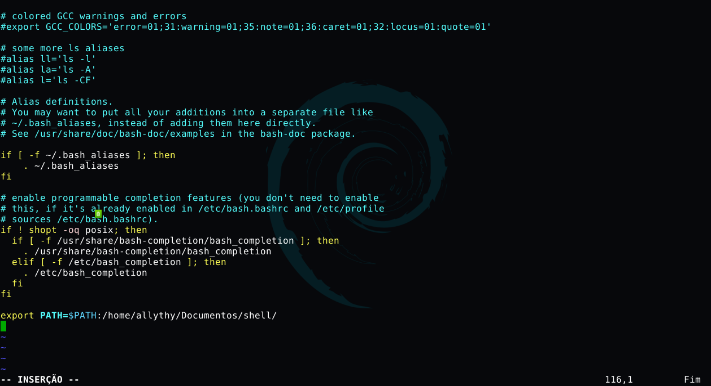

Neste artigo, vamos aprender como configurar uma variável no $PATH do GNU/Linux. Quando você digita um comando no seu Shell o que você está dizendo é pra ele executar um programa. Mesmos comandos simples, como ls , cd , mkdir , rm e outros, são apenas pequenos programas que geralmente ficam dentro de um diretório no seu computador chamado /usr/bin.
Existem outros lugares em seu sistema que geralmente possuem programas executáveis também, os mais comuns são: /usr/local/ bin, /usr/local/sbin e /usr/sbin. Onde os programas ficam e por que, estão fora do escopo deste artigo, mas um programa executável pode ficar praticamente em qualquer lugar do seu sistema ele não precisa se limitar a um desses diretórios.
Quando você digita um comando no seu Shell, ele não vai procurar em todos os diretórios para ver se tem um programa com esse nome, mas apenas em diretórios específicos. Como eu sei qual é esses diretórios ? É simples, eles fazem parte de uma variável de ambiente, chamada $PATH, onde o seu Shell faz uma verificação para saber onde procurar. Para ver o que está no seu $PATH, digite:
echo $PATH
Você provavelmente verá os diretórios mencionados acima, bem como alguns outros e todos são separados por dois pontos.
Às vezes, você precisa instalar algum programa que está em outro local do seu sistema, mas não que dizer o seu caminho completo. Você pode fazer isso facilmente adicionando um diretório a sua variável ambiente $PATH.
Digamos que você escreveu um pequeno Shell Script chamado hello.sh e ele está localizado em um diretório chamado shell que tem esse caminho /home/allythy/Documentos/shell. Este script fornece alguma função útil e você gostaria de executar ele independentemente do diretório em que você estivesse. Para isso, basta adicionar o caminho do seu arquivo para a variável de ambiente $PATH com o seguinte comando:
export PATH=$PATH:/home/allythy/Documentos/shell
Agora você pode executar o seu script em qualquer lugar do seu sistema apenas digitando seu nome(hello.sh), sem ter que incluir o caminho completo dele.
Mas o que acontece se você reiniciar seu computador ou abri um terminal ? Sua adição do caminho a variável de ambiente $PATH desapareceu. A variável $PATH é definida pelo seu Shell toda vez que você abri um novo terminal, mas você pode configurá-lo para que ele sempre inclua seu novo caminho a cada novo Shell que você vai abrir.
Você pode configurar para todos os usuários do sistema colocando o comando acima export PATH=$PATH:/home/allythy/Documentos/shell no final de algum desses arquivos:
/etc/profile /
/etc/profile.d/
/etc/bash.bashrc
Ou para um usuário específico colocando o comando acima nesses arquivos:
~/.bashrc
~/.profile
Vou dá um exemplo colocando o caminho do nosso script no arquivo ~/.bashrc. Primeiro, vamos abri o arquivo com algum editor de texto.
vim ~/.bashrc
Feito isso, vamos colocar o esse comando export PATH=$PATH:/home/allythy/Documentos/shell no final do arquivo e depois salvar. O seu arquivo deve ficar assim.

Pronto agora você pode acessar o seu script em qualquer parte do seu sistema.